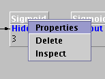
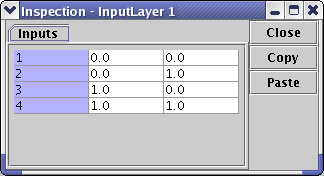

Processing Elements
The processing elements of a neural network are available trought a
little icon on the toolbar.
To put any of them on the drawing area, simply select its icon and
click on the development pane.
Each component has a popup menu that can be shown simply right-clicking
on a component's figure in the drawing area.

The popup menu contains three menu items:
Properties: displays the
property window
The properties windows contains all the editable properties of the
selected component. Its content can change depending on the kind of the
processing element.
Inspect: displays a table
containing the internal values of the component.

In this sample is shown an inspect frame for an input synapse.
- The 'Close' button closes the frame.
- The 'Copy' button permits to copy the table in the
clipboard to
paste
it into whatever application (a spreadsheet, for instance)
- The 'Paste' button permits to paste the content of the
clipboard
into the table, starting from the upper-left element. The data in the
clipboard must have the same format already seen for the input data
format of a FileInputSynapse component, i.e. the columns separated by a
semicolon and the rows by a carriage return. In this manner it's
possible set the initial values of a neural network by hand.
The content of this window changes depending on the selected component:
- for an InputSynapse, it
shows the input patterns contained in the buffer (valid only for a
buffered input synapse).
- for a Layer, it shows a
1D array containing the bias' values, one for each neuron of the Layer.
- for a Synapse, it shows
a 2D array containing the weights of each connection.
Delete: eliminates the
components from the neural network